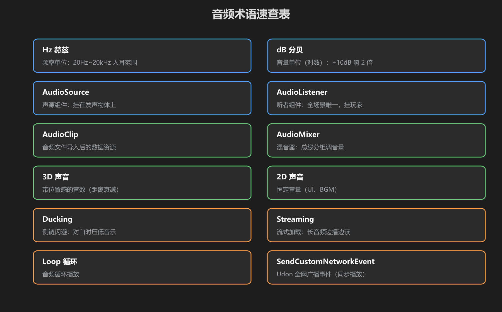
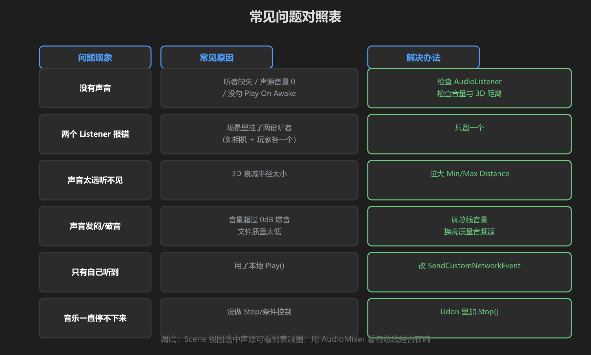
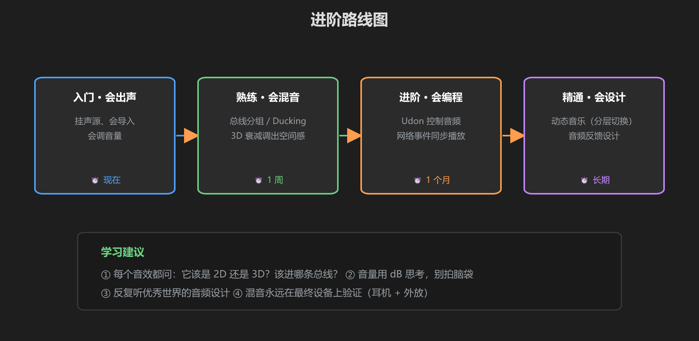

第 6 篇：速查表 & 常见问题
做完前五篇后，遇到问题先来这里翻。
1. 术语速查表

图：12 个必懂术语
| 术语 | 一句话解释 |
|---|---|
| Hz 赫兹 | 频率单位，20Hz~20kHz 是人耳范围，决定音高 |
| dB 分贝 | 音量单位（对数），+10dB ≈ 响 2 倍 |
| AudioSource | 声源组件，挂在发声物体上 |
| AudioListener | 听者组件，全场景唯一，挂玩家 |
| AudioClip | 音频文件导入后的数据资源 |
| AudioMixer | 混音器，总线分组调音量 |
| 3D 声音 | 带位置感的音效（距离衰减 + 声道） |
| 2D 声音 | 恒定音量（UI、BGM） |
| Ducking | 侧链闪避：对白时音乐自动压低 |
| Streaming | 流式加载：长音频边播边读省内存 |
| Loop | 循环播放 |
| SendCustomNetworkEvent | Udon 全网广播事件（同步播放） |
2. 常见问题对照表

图：现象 → 原因 → 解法
| 现象 | 原因 | 解法 |
|---|---|---|
| 没有声音 | 听者缺失 / 音量 0 / 没勾 Play On Awake | 检查 AudioListener、音量、Spatial Blend 与距离 |
| 两个 Listener 报错 | 场景里挂了两份听者 | 只保留一个 |
| 声音太远听不见 | 3D 衰减 Max Distance 太小 | 拉大 Min/Max Distance |
| 声音发闷/破音 | 音量超 0dB 爆音 / 源文件质量低 | 总线压音量，换高质量音频 |
| 只有自己听到 | 用了本地 Play() | 改用 SendCustomNetworkEvent |
| 音乐停不下来 | 没做停止逻辑 | Udon 里调 Stop() |
3. 进阶路线图

图：入门 → 熟练 → 进阶 → 精通
| 阶段 | 目标 | 学习内容 |
|---|---|---|
| 入门 | 会放声音 | 本教程：导入、声源、总线 |
| 熟练 | 会混音 | Ducking、压缩、EQ、3D 衰减精细调 |
| 进阶 | 会编程 | Udon 音频控制、动态音量、网络同步 |
| 精通 | 会设计 | 动态音乐（分层/片段切换）、音频反馈系统 |
4. 学习资源
- Unity 官方文档：Audio、Audio Mixer、3D Sound 部分
- 免费音效站：Freesound、Kenney、opengameart
- Audacity：免费音频编辑，剪切、降噪、响度归一化
- VRChat 里拆解：戴耳机逛好世界，听声场 —— 声源在哪、多大声、有没有闪避
最后的话：音频的验收标准永远是你的耳朵。戴上耳机，在 VRChat 里走一圈 —— 舒服、自然、不吵，就是做好了。